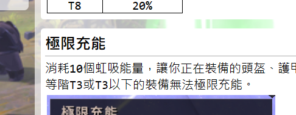

首頁
感謝您來到本攻略網
起初只是想學學看靜態網頁 感覺蠻有趣的
結果這一年來albion農累了就換農wiki
不知不覺中更新了這麼多內容
本站的數據跟公式幾乎都是經由大量觀測得出的 希望這個網站能幫到你
如果有發現任何錯誤或bug 或是你想建議我寫啥的
請到巴哈文章下留言 或點擊頁尾的discord連結
再次感謝正在讀這段內容的你 以及推文的GP 讓我知道還有人看
"如果有一天退坑了，那麼狼除了銀幣以外，還能留下什麼呢？"
起初只是想學學看靜態網頁 感覺蠻有趣的
結果這一年來albion農累了就換農wiki
不知不覺中更新了這麼多內容
本站的數據跟公式幾乎都是經由大量觀測得出的 希望這個網站能幫到你
如果有發現任何錯誤或bug 或是你想建議我寫啥的
請到巴哈文章下留言 或點擊頁尾的discord連結
再次感謝正在讀這段內容的你 以及推文的GP 讓我知道還有人看
"如果有一天退坑了，那麼狼除了銀幣以外，還能留下什麼呢？"
程式碼字數(不含空白&Tab)
91042
頁面書籤網址(實驗性)
假設需要一個連結，點擊後直接進到該攻略，並且自動滾動到"極限充能"這個章節。
直接在攻略網址後加上"#極限充能"即可
例：https://runnywolf.github.io/albionwiki/page/item_power#極限充能